Você posta.
Poucos interagem.

Traffic • Social • Growth
Agenda abertaEstratégias de tráfego pago e gestão de Instagram para marcas que querem ser vistas pelas pessoas certas e transformar presença digital em oportunidade de negócio.
O problema
Poucos interagem.
Poucos convertem.
Poucos conhecem.
Faltam clientes.
Como posso ajudar
Sua marca não precisa apenas aparecer. Ela precisa ser lembrada, gerar conexão e criar oportunidades.
Campanhas pensadas para alcançar o público certo, gerar movimento e transformar dados em decisões.
Cada ação gera dados. Cada dado ajuda a tomar uma decisão melhor.
Estratégia define o que fazemos depois.
Processo
Método
Diagnóstico
Começamos com uma leitura completa do momento da marca. Analisamos o perfil, o mercado, os concorrentes e o caminho atual do cliente para descobrir gargalos e oportunidades.
Estratégia
Transformamos o diagnóstico em um plano sob medida. Definimos posicionamento, mensagens, públicos, linha editorial, campanhas e indicadores para cada ação ter um motivo e uma meta.
Execução
A estratégia ganha forma com conteúdos, criativos e campanhas conectados. Organizamos a distribuição e acompanhamos cada ponto de contato para a comunicação chegar às pessoas certas.
Otimização
Resultados são acompanhados continuamente. Testamos variações, identificamos padrões e realocamos esforços para melhorar o custo, a qualidade dos contatos e a escala do que funciona.
Resultados
Exemplos fictícios para demonstrar como os resultados podem ser apresentados. Substitua pelos cases reais quando estiverem disponíveis.
Cliente fictício
Objetivo
Gerar novos contatos para encomendas personalizadas.Cliente fictício
Objetivo
Reposicionar o perfil e construir autoridade local.Responda quatro perguntas rápidas e leve um resumo do cenário diretamente para uma conversa com o Renan.
Gestor de tráfego, social media e estrategista digital focado em transformar atenção em oportunidades. Um trabalho próximo, claro e orientado por objetivos reais do negócio.
“Meu objetivo não é colocar sua empresa na frente de todo mundo. É colocá-la na frente das pessoas certas.”
O planejamento trouxe clareza para o conteúdo e finalmente conseguimos entender quais campanhas geravam contatos de verdade.
O perfil ganhou consistência, a comunicação ficou profissional e passamos a conversar com um público muito mais qualificado.
Faça sua empresa chegar até ele.